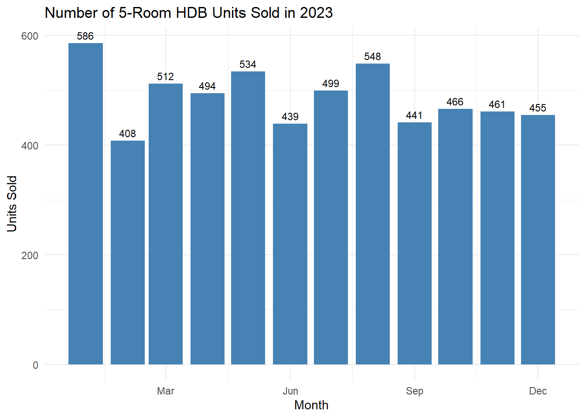
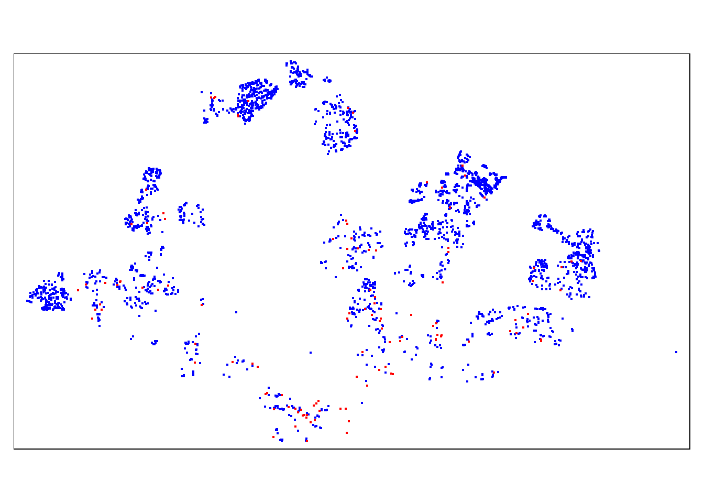
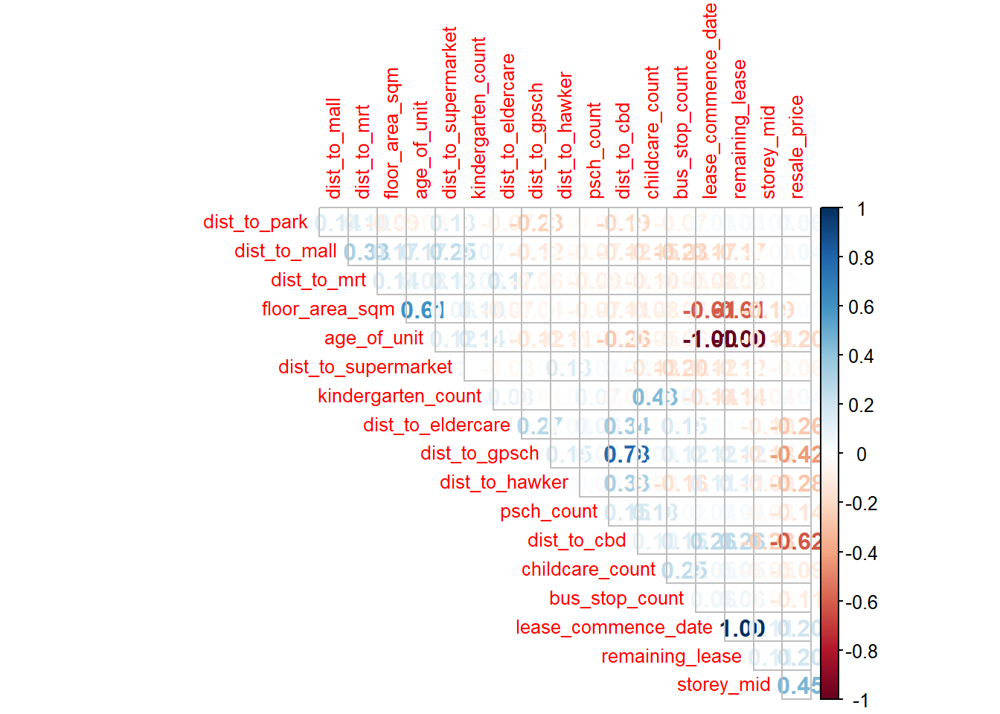

pacman::p_load(tmap,
SpatialAcc,
sf,
reshape2,
tidyverse,
dplyr,
ggplot2,
httr,
jsonlite,
spdep,
GWmodel,
SpatialML,
tmap,
rsample,
Metrics)Take-Home Exercise 03 - Predictive Model on HDB Resale Prices
1 Introduction
The aim of this exercise is to calibrate a predictive model to predict the HDB resale prices between July - September 2024 by using HDB resale transaction records in 2023.
We will be using a list of predictors as follows:
Structural Factors:
- Area of the unit
- Floor level
- Remaining lease
- Age of the unit
- Main Upgrading Program (MUP) Completed
Locational factors
- Proximity to:
- CBD
- Eldercare centres
- Foodcourt/hawker centres
- MRT Stations
- Park
- Good Primary School (Gifted Education Programme)
- Shopping mall
- Supermarket
- Number of:
Kindergartens within 350m
Childcare centres within 350m
Bus stop within 350m
Primary school within 1km
As I have selected the above predictors, I will be selecting five-room HDBs as the focus of this study as it will be able to accomodate multi-generation families in the most suitable/comfortable manner. This study would not consider other larger flat types such as executive and multi-generation which were included in the dataset as well.
1.1 Preparing the Data
Loading the required R packages as below.
1.1.1 HDB Resale Data
HDB Data on resale prices is is obtained from Data.gov.sg. The resale prices are provided in a CSV format. Hence we will import it via read_csv.
hdb_r <- read_csv("data/hdb/resale.csv")Filtering the dataset for the relevant time period (Year 2023) and flat types will be done with the following code chunk.
# Convert 'month' to Date type
hdb_r <- hdb_r %>%
mutate(month = as.Date(paste0(month, "-01"))) # Ensure the 'month' column is a Date type
# Filter for data from 2023
hdb_r_2023 <- hdb_r %>%
filter(year(month) == 2023)
# Filter for 5 ROOM HDB Flats only
hdb5rm_r_2023 <- hdb_r_2023 %>%
filter(flat_type == "5 ROOM")A quick check on the data table prepared to only contain the data required - 5 Room HDBs and 2023 transaction data is performed with the code chunks below.
head(hdb5rm_r_2023)# A tibble: 6 × 11
month town flat_type block street_name storey_range floor_area_sqm
<date> <chr> <chr> <chr> <chr> <chr> <dbl>
1 2023-01-01 ANG MO KIO 5 ROOM 306 ANG MO KIO … 16 TO 18 123
2 2023-01-01 ANG MO KIO 5 ROOM 306 ANG MO KIO … 04 TO 06 123
3 2023-01-01 ANG MO KIO 5 ROOM 402 ANG MO KIO … 10 TO 12 119
4 2023-01-01 ANG MO KIO 5 ROOM 259 ANG MO KIO … 13 TO 15 135
5 2023-01-01 ANG MO KIO 5 ROOM 176 ANG MO KIO … 04 TO 06 119
6 2023-01-01 ANG MO KIO 5 ROOM 618 ANG MO KIO … 13 TO 15 133
# ℹ 4 more variables: flat_model <chr>, lease_commence_date <dbl>,
# remaining_lease <chr>, resale_price <dbl>table(hdb5rm_r_2023$flat_type)
5 ROOM
5843 # Group data by month and count the number of units sold
units_sold_per_month <- hdb5rm_r_2023 %>%
group_by(month) %>%
summarise(units_sold = n())
# Plot the number of units sold using a bar chart with data labels
ggplot(units_sold_per_month, aes(x = month, y = units_sold)) +
geom_col(fill = "steelblue") +
geom_text(aes(label = units_sold), vjust = -0.5, color = "black", size = 3) +
scale_x_date(date_breaks = "3 months", date_labels = "%b") +
labs(title = "Number of 5-Room HDB Units Sold in 2023",
x = "Month",
y = "Units Sold") +
theme_minimal()
We further extract the numerical value of the “storey_range” variable from the dataset to calculate the midpoint for further quantitative analysis in our subsequent worksteps.
# Extract the numerical midpoint of 'storey_range'
hdb5rm_r_2023 <- hdb5rm_r_2023 %>%
mutate(
storey_mid = storey_range %>%
gsub(" TO ", "-", .) %>%
purrr::map_dbl(~ mean(as.numeric(unlist(strsplit(.x, "-"))))),
floor_area_sqm = as.numeric(floor_area_sqm) # Ensure floor_area_sqm is numeric
)To calculate the age of the unit and remaining lease in years we use the following code chunk:
# Assuming 'construction_year' is available or known
current_year <- 2024 # Use 2024 as the base year for calculation
hdb5rm_r_2023 <- hdb5rm_r_2023 %>%
mutate(
age_of_unit = current_year - as.numeric(lease_commence_date),
remaining_lease = 99 - age_of_unit # Assuming a 99-year lease
)We use the following code chunk to fetch the longitude and latitude of the HDB resale data via the address within from the OneMap API.
# Define the function to get coordinates from OneMap API
get_coords <- function(add_list) {
# Create a data frame to store all retrieved coordinates
postal_coords <- data.frame()
for (i in add_list) {
tryCatch({
r <- GET('https://www.onemap.gov.sg/api/common/elastic/search?',
query = list(searchVal = i,
returnGeom = 'Y',
getAddrDetails = 'Y'))
data <- fromJSON(rawToChar(r$content))
found <- data$found
res <- data$results
# Create a new data frame for each address
new_row <- data.frame()
if (found == 1) {
postal <- res$POSTAL
lat <- res$LATITUDE
lng <- res$LONGITUDE
new_row <- data.frame(address = i,
postal = postal,
latitude = lat,
longitude = lng)
} else if (found > 1) {
res_sub <- res[res$POSTAL != "NIL", ]
if (nrow(res_sub) == 0) {
new_row <- data.frame(address = i,
postal = NA,
latitude = NA,
longitude = NA)
} else {
top1 <- head(res_sub, n = 1)
postal <- top1$POSTAL
lat <- top1$LATITUDE
lng <- top1$LONGITUDE
new_row <- data.frame(address = i,
postal = postal,
latitude = lat,
longitude = lng)
}
} else {
new_row <- data.frame(address = i,
postal = NA,
latitude = NA,
longitude = NA)
}
postal_coords <- rbind(postal_coords, new_row)
Sys.sleep(0.1) # Rate limiting
}, error = function(e) {
message(paste("Error retrieving data for address:", i))
new_row <- data.frame(address = i,
postal = NA,
latitude = NA,
longitude = NA)
postal_coords <- rbind(postal_coords, new_row)
})
}
return(postal_coords)
}
# Create a unique address list for geocoding
address_list <- unique(hdb5rm_r_2023 %>%
mutate(address = paste(block, street_name, town, "Singapore")) %>%
pull(address))
# Get coordinates for each unique address
coords_df <- get_coords(address_list)
# Ensure coords_df has unique addresses before joining
coords_df <- coords_df %>%
distinct(address, .keep_all = TRUE)
# Merge the coordinates back with the original data frame
hdb5rm_r_2023 <- hdb5rm_r_2023 %>%
mutate(address = paste(block, street_name, town, "Singapore")) %>%
left_join(coords_df, by = "address")
# Check the final number of observations
nrow(hdb5rm_r_2023)head(hdb5rm_r_2023)# A tibble: 6 × 13
month town flat_type block street_name storey_range floor_area_sqm
<date> <chr> <chr> <chr> <chr> <chr> <dbl>
1 2023-01-01 ANG MO KIO 5 ROOM 306 ANG MO KIO … 16 TO 18 123
2 2023-01-01 ANG MO KIO 5 ROOM 306 ANG MO KIO … 04 TO 06 123
3 2023-01-01 ANG MO KIO 5 ROOM 402 ANG MO KIO … 10 TO 12 119
4 2023-01-01 ANG MO KIO 5 ROOM 259 ANG MO KIO … 13 TO 15 135
5 2023-01-01 ANG MO KIO 5 ROOM 176 ANG MO KIO … 04 TO 06 119
6 2023-01-01 ANG MO KIO 5 ROOM 618 ANG MO KIO … 13 TO 15 133
# ℹ 6 more variables: flat_model <chr>, lease_commence_date <dbl>,
# remaining_lease <dbl>, resale_price <dbl>, storey_mid <dbl>,
# age_of_unit <dbl>Save it into rds format to reduce subsequent loading time as the OneMap API takes time to extract the location for each transaction data.
write_rds(hdb5rm_r_2023, "data/rds/hdb5rm_r_2023_loc.rds")Read from the saved RDS.
hdb5rm_r_2023_loc <- read_rds("data/rds/hdb5rm_r_2023_loc.rds")Ensuring CRS is 3414
hdb5rm_r_2023_sf <- st_as_sf(hdb5rm_r_2023_loc, coords = c("longitude", "latitude"),crs=4326)
st_transform(hdb5rm_r_2023_sf, crs = 3414)Simple feature collection with 5843 features and 15 fields
Geometry type: POINT
Dimension: XY
Bounding box: xmin: 11755.72 ymin: 28211.46 xmax: 46810.43 ymax: 48741.06
Projected CRS: SVY21 / Singapore TM
# A tibble: 5,843 × 16
month town flat_type block street_name storey_range floor_area_sqm
* <date> <chr> <chr> <chr> <chr> <chr> <dbl>
1 2023-01-01 ANG MO KIO 5 ROOM 306 ANG MO KIO… 16 TO 18 123
2 2023-01-01 ANG MO KIO 5 ROOM 306 ANG MO KIO… 04 TO 06 123
3 2023-01-01 ANG MO KIO 5 ROOM 402 ANG MO KIO… 10 TO 12 119
4 2023-01-01 ANG MO KIO 5 ROOM 259 ANG MO KIO… 13 TO 15 135
5 2023-01-01 ANG MO KIO 5 ROOM 176 ANG MO KIO… 04 TO 06 119
6 2023-01-01 ANG MO KIO 5 ROOM 618 ANG MO KIO… 13 TO 15 133
7 2023-01-01 ANG MO KIO 5 ROOM 520 ANG MO KIO… 19 TO 21 118
8 2023-01-01 ANG MO KIO 5 ROOM 700C ANG MO KIO… 19 TO 21 111
9 2023-01-01 ANG MO KIO 5 ROOM 714 ANG MO KIO… 10 TO 12 119
10 2023-01-01 ANG MO KIO 5 ROOM 253 ANG MO KIO… 04 TO 06 128
# ℹ 5,833 more rows
# ℹ 9 more variables: flat_model <chr>, lease_commence_date <dbl>,
# remaining_lease <dbl>, resale_price <dbl>, storey_mid <dbl>,
# age_of_unit <dbl>, address <chr>, postal <chr>, geometry <POINT [m]>st_crs(hdb5rm_r_2023_sf)Coordinate Reference System:
User input: EPSG:4326
wkt:
GEOGCRS["WGS 84",
ENSEMBLE["World Geodetic System 1984 ensemble",
MEMBER["World Geodetic System 1984 (Transit)"],
MEMBER["World Geodetic System 1984 (G730)"],
MEMBER["World Geodetic System 1984 (G873)"],
MEMBER["World Geodetic System 1984 (G1150)"],
MEMBER["World Geodetic System 1984 (G1674)"],
MEMBER["World Geodetic System 1984 (G1762)"],
MEMBER["World Geodetic System 1984 (G2139)"],
ELLIPSOID["WGS 84",6378137,298.257223563,
LENGTHUNIT["metre",1]],
ENSEMBLEACCURACY[2.0]],
PRIMEM["Greenwich",0,
ANGLEUNIT["degree",0.0174532925199433]],
CS[ellipsoidal,2],
AXIS["geodetic latitude (Lat)",north,
ORDER[1],
ANGLEUNIT["degree",0.0174532925199433]],
AXIS["geodetic longitude (Lon)",east,
ORDER[2],
ANGLEUNIT["degree",0.0174532925199433]],
USAGE[
SCOPE["Horizontal component of 3D system."],
AREA["World."],
BBOX[-90,-180,90,180]],
ID["EPSG",4326]]hdb5rm_r_2023_sf2 <- st_transform(hdb5rm_r_2023_sf, crs = 3414)st_crs(hdb5rm_r_2023_sf2)Coordinate Reference System:
User input: EPSG:3414
wkt:
PROJCRS["SVY21 / Singapore TM",
BASEGEOGCRS["SVY21",
DATUM["SVY21",
ELLIPSOID["WGS 84",6378137,298.257223563,
LENGTHUNIT["metre",1]]],
PRIMEM["Greenwich",0,
ANGLEUNIT["degree",0.0174532925199433]],
ID["EPSG",4757]],
CONVERSION["Singapore Transverse Mercator",
METHOD["Transverse Mercator",
ID["EPSG",9807]],
PARAMETER["Latitude of natural origin",1.36666666666667,
ANGLEUNIT["degree",0.0174532925199433],
ID["EPSG",8801]],
PARAMETER["Longitude of natural origin",103.833333333333,
ANGLEUNIT["degree",0.0174532925199433],
ID["EPSG",8802]],
PARAMETER["Scale factor at natural origin",1,
SCALEUNIT["unity",1],
ID["EPSG",8805]],
PARAMETER["False easting",28001.642,
LENGTHUNIT["metre",1],
ID["EPSG",8806]],
PARAMETER["False northing",38744.572,
LENGTHUNIT["metre",1],
ID["EPSG",8807]]],
CS[Cartesian,2],
AXIS["northing (N)",north,
ORDER[1],
LENGTHUNIT["metre",1]],
AXIS["easting (E)",east,
ORDER[2],
LENGTHUNIT["metre",1]],
USAGE[
SCOPE["Cadastre, engineering survey, topographic mapping."],
AREA["Singapore - onshore and offshore."],
BBOX[1.13,103.59,1.47,104.07]],
ID["EPSG",3414]]1.1.2 Preparing the other locational factors (Proximity)
1.1.2.1 Proximity to CBD
We will calculate the distance from each HDB to the CBD, point coordinate approximated as 1.283423, 103.851959.
The results are then added back as “dist_to_cbd” in the hdb sf data frame.
# Add the coordinates for the CBD
cbd_coords <- data.frame(
name = "CBD",
longitude = 103.851959, # Approximate longitude of Singapore's CBD
latitude = 1.283423 # Approximate latitude of Singapore's CBD
)
# Convert CBD to an sf object
cbd_sf <- st_as_sf(cbd_coords, coords = c("longitude", "latitude"), crs = 4326)
cbd_sf2 <- st_transform(cbd_sf, crs = 3414)
# Calculate distance from HDB locations to the CBD
hdb5rm_r_2023_sf2 <- hdb5rm_r_2023_sf2 %>%
mutate(
dist_to_cbd = st_distance(geometry, cbd_sf2) %>% as.numeric() / 1000 # Convert to kilometers
)1.1.2.2 Proximity to Eldercare services
Load the location dataset of eldercare services downloaded from data.gov.sg. Ensure it is in CRS 3414 to calculate proximity / distance in metres / KM.
# Read the eldercare GeoJSON file
eldercare_sf <- st_read("data/eldercare/EldercareServices.geojson", crs = 4326)Reading layer `EldercareServices' from data source
`C:\Users\jia_y\OneDrive - Singapore Management University\Semester 4\ISSS626-G1 Geo Spatial Analytics and Applications\jylau91\ISSS626-GAA\Take-home_Ex\Take-home_Ex03\data\eldercare\EldercareServices.geojson'
using driver `GeoJSON'
Simple feature collection with 133 features and 2 fields
Geometry type: POINT
Dimension: XYZ
Bounding box: xmin: 103.7119 ymin: 1.271472 xmax: 103.9561 ymax: 1.439561
z_range: zmin: 0 zmax: 0
Geodetic CRS: WGS 84eldercare_sf2 <- st_transform(eldercare_sf, crs = 3414)st_crs(eldercare_sf2)Coordinate Reference System:
User input: EPSG:3414
wkt:
PROJCRS["SVY21 / Singapore TM",
BASEGEOGCRS["SVY21",
DATUM["SVY21",
ELLIPSOID["WGS 84",6378137,298.257223563,
LENGTHUNIT["metre",1]]],
PRIMEM["Greenwich",0,
ANGLEUNIT["degree",0.0174532925199433]],
ID["EPSG",4757]],
CONVERSION["Singapore Transverse Mercator",
METHOD["Transverse Mercator",
ID["EPSG",9807]],
PARAMETER["Latitude of natural origin",1.36666666666667,
ANGLEUNIT["degree",0.0174532925199433],
ID["EPSG",8801]],
PARAMETER["Longitude of natural origin",103.833333333333,
ANGLEUNIT["degree",0.0174532925199433],
ID["EPSG",8802]],
PARAMETER["Scale factor at natural origin",1,
SCALEUNIT["unity",1],
ID["EPSG",8805]],
PARAMETER["False easting",28001.642,
LENGTHUNIT["metre",1],
ID["EPSG",8806]],
PARAMETER["False northing",38744.572,
LENGTHUNIT["metre",1],
ID["EPSG",8807]]],
CS[Cartesian,2],
AXIS["northing (N)",north,
ORDER[1],
LENGTHUNIT["metre",1]],
AXIS["easting (E)",east,
ORDER[2],
LENGTHUNIT["metre",1]],
USAGE[
SCOPE["Cadastre, engineering survey, topographic mapping."],
AREA["Singapore - onshore and offshore."],
BBOX[1.13,103.59,1.47,104.07]],
ID["EPSG",3414]]Calculating the minimum distance using st_distance against the list of eldercare services followed by a minimum function.
# Calculate distances from each HDB point to the nearest eldercare center
hdb5rm_r_2023_sf2 <- hdb5rm_r_2023_sf2 %>%
mutate(dist_to_eldercare = st_distance(geometry, eldercare_sf2) %>% apply(1, min))
# Convert distances from meters to kilometers
hdb5rm_r_2023_sf2 <- hdb5rm_r_2023_sf2 %>%
mutate(dist_to_eldercare = as.numeric(dist_to_eldercare) / 1000)Plot the coordinates to ensure that the HDB and services are plotted on the same coordinate system.
library(tmap)
tmap_mode("plot")
tm_shape(hdb5rm_r_2023_sf2) + tm_dots(col = "blue") +
tm_shape(eldercare_sf2) + tm_dots(col = "red")
1.1.2.3 Proximity to a Hawker centre
We now repeat the steps from 1.1.2.2 to 1.1.2.8 for the respective services.
# Read the hawker centres GeoJSON file
hawker_centres_sf <- st_read("data/hawker_food/HawkerCentresGEOJSON.geojson", crs = 4326)
hawker_centres_sf2 <- st_transform(hawker_centres_sf, crs = 3414)
# Check the CRS to confirm it's transformed correctly
st_crs(hawker_centres_sf2)
# Calculate distances from each HDB point to the nearest hawker centre
hdb5rm_r_2023_sf2 <- hdb5rm_r_2023_sf2 %>%
mutate(dist_to_hawker = st_distance(geometry, hawker_centres_sf2) %>% apply(1, min))
# Convert distances from meters to kilometers
hdb5rm_r_2023_sf2 <- hdb5rm_r_2023_sf2 %>%
mutate(dist_to_hawker = as.numeric(dist_to_hawker) / 1000)
# Visualize the HDB locations and hawker centres for verification
library(tmap)
tmap_mode("plot")
tm_shape(hdb5rm_r_2023_sf2) + tm_dots(col = "blue") +
tm_shape(hawker_centres_sf2) + tm_dots(col = "green")1.1.2.4 Proximity to a MRT Station
# Read the MRT stations GeoJSON file
mrt_stations_sf <- st_read("data/mrt/LTAMRTStationExitGEOJSON.geojson", crs = 4326)
mrt_stations_sf2 <- st_transform(mrt_stations_sf, crs = 3414)
# Check the CRS to confirm it's transformed correctly
st_crs(mrt_stations_sf2)
# Calculate distances from each HDB point to the nearest MRT station
hdb5rm_r_2023_sf2 <- hdb5rm_r_2023_sf2 %>%
mutate(dist_to_mrt = st_distance(geometry, mrt_stations_sf2) %>% apply(1, min))
# Convert distances from meters to kilometers
hdb5rm_r_2023_sf2 <- hdb5rm_r_2023_sf2 %>%
mutate(dist_to_mrt = as.numeric(dist_to_mrt) / 1000)
# Visualize the HDB locations and MRT stations for verification
library(tmap)
tmap_mode("plot")
tm_shape(hdb5rm_r_2023_sf2) + tm_dots(col = "blue") +
tm_shape(mrt_stations_sf2) + tm_dots(col = "orange")1.1.2.5 Proximity to a Park
# Read the parks GeoJSON file
parks_sf <- st_read("data/park/ParkFacilitiesGEOJSON.geojson", crs = 4326)
parks_sf2 <- st_transform(parks_sf, crs = 3414)
# Check the CRS to confirm it's transformed correctly
st_crs(parks_sf2)
# Calculate distances from each HDB point to the nearest park
hdb5rm_r_2023_sf2 <- hdb5rm_r_2023_sf2 %>%
mutate(dist_to_park = st_distance(geometry, parks_sf2) %>% apply(1, min))
# Convert distances from meters to kilometers
hdb5rm_r_2023_sf2 <- hdb5rm_r_2023_sf2 %>%
mutate(dist_to_park = as.numeric(dist_to_park) / 1000)
# Visualize the HDB locations and parks for verification
library(tmap)
tmap_mode("plot")
tm_shape(hdb5rm_r_2023_sf2) + tm_dots(col = "blue") +
tm_shape(parks_sf2) + tm_dots(col = "green")1.1.2.6 Proximity to a Supermarket
# Read the supermarkets GeoJSON file
supermarkets_sf <- st_read("data/supermarket/SupermarketsGEOJSON.geojson", crs = 4326)
supermarkets_sf2 <- st_transform(supermarkets_sf, crs = 3414)
# Check the CRS to confirm it's transformed correctly
st_crs(supermarkets_sf2)
# Calculate distances from each HDB point to the nearest supermarket
hdb5rm_r_2023_sf2 <- hdb5rm_r_2023_sf2 %>%
mutate(dist_to_supermarket = st_distance(geometry, supermarkets_sf2) %>% apply(1, min))
# Convert distances from meters to kilometers
hdb5rm_r_2023_sf2 <- hdb5rm_r_2023_sf2 %>%
mutate(dist_to_supermarket = as.numeric(dist_to_supermarket) / 1000)
# Visualize the HDB locations and supermarkets for verification
library(tmap)
tmap_mode("plot")
tm_shape(hdb5rm_r_2023_sf2) + tm_dots(col = "blue") +
tm_shape(supermarkets_sf2) + tm_dots(col = "orange")1.1.2.7 Proximity to a Shopping Mall
To obtain the list of Shopping Malls we will scrape OpenStreetMap
# Get Singapore's bounding box
singapore_bbox <- getbb("Singapore")
# Define the tag for shopping malls
tag <- "mall"
# Retrieve data from OpenStreetMap using the bounding box for Singapore
mall_data <- opq(bbox = singapore_bbox) %>%
add_osm_feature(key = "shop", value = tag) %>%
osmdata_sf()
# Extract point and polygon geometries (malls), calculate centroids for polygons
mall_points <- mall_data$osm_points %>% select(osm_id, name, geometry)
mall_polygons <- mall_data$osm_polygons %>%
select(osm_id, name, geometry) %>%
mutate(geometry = st_centroid(geometry)) # Convert polygons to centroids
# Combine points and polygons into one dataset
shop_mall <- bind_rows(mall_points, mall_polygons) %>%
filter(!is.na(name)) # Filter to keep only malls with names
# Load a detailed boundary of Singapore to use as a spatial filter
singapore_boundary <- opq(bbox = singapore_bbox) %>%
add_osm_feature(key = "admin_level", value = "2") %>%
osmdata_sf() %>%
.$osm_multipolygons %>%
filter(name == "Singapore")
# Spatial filter: keep only malls within Singapore's boundary
shop_mall <- shop_mall %>%
st_transform(st_crs(singapore_boundary)) %>%
st_intersection(singapore_boundary)
# Extract latitude and longitude from geometry
shop_mall <- shop_mall %>%
mutate(latitude = st_coordinates(geometry)[,2],
longitude = st_coordinates(geometry)[,1])
# Keep only the specified columns
shop_mall <- shop_mall %>% select(name, osm_id, longitude, latitude, geometry)
# Display the data for confirmation
head(shop_mall)
# Save to a CSV file
write.csv(shop_mall %>% select(name, osm_id, longitude, latitude),
"data/shop_mall/shop_mall_centroids.csv", row.names = FALSE)Transform the scrapped data into CRS 3414.
shop_mall <- st_transform(shop_mall, crs = 3414)Perform the same st_distance calculation against our HDB dataset.
# Ensure that shop_mall is in the correct CRS (3414)
shop_mall_sf <- st_transform(shop_mall, crs = 3414)
# Check the CRS to confirm it's transformed correctly
st_crs(shop_mall_sf)
# Calculate distances from each HDB point to the nearest shopping mall
hdb5rm_r_2023_sf2 <- hdb5rm_r_2023_sf2 %>%
mutate(dist_to_mall = st_distance(geometry, shop_mall_sf) %>% apply(1, min))
# Convert distances from meters to kilometers
hdb5rm_r_2023_sf2 <- hdb5rm_r_2023_sf2 %>%
mutate(dist_to_mall = as.numeric(dist_to_mall) / 1000)
# Visualize the HDB locations and shopping malls for verification
library(tmap)
tmap_mode("plot")
tm_shape(hdb5rm_r_2023_sf2) + tm_dots(col = "blue") +
tm_shape(shop_mall_sf) + tm_dots(col = "orange")1.1.2.8 Proximity to a Good Primary School
Next, we will take primary schools that offers the Gifted Education Program as a proxy or identifier of a good primary school. There are other subjective methods such as calculating the number of applications over student cohort that could be considered.
Myth or not: Every School is a Good School?
Although every school is a good school as a former Minister of Education had previously stated, but our current PM Lawrence Wong added on “but not everyone is convinced.” We have also learnt other wise from Data Analytics Labs. Afterall a good school or right school might be more than academic results as jobs evolves from specific domain knowledge.
Listed on MOE’s website are these 9 primary schools, I have extracted the address from the website manually and saved them into a CSV file.
| School | Address |
| Anglo-Chinese School (Primary) | 50 Barker Road, S309918 |
| Catholic High School (Primary Section) | 9 Bishan Street 22, S579767 |
| Henry Park Primary School | 1 Holland Grove Road, S278790 |
| Nan Hua Primary School | 30 Jalan Lempeng, S128806 |
| Nanyang Primary School | 52 King’s Road, S268097 |
| Raffles Girls’ Primary School | 21 Hillcrest Road, S289072 |
| Rosyth School | 21 Serangoon North Avenue 4, S555855 |
| St. Hilda’s Primary School | 2 Tampines Ave 3, S529706 |
| Tao Nan School | 49 Marine Crescent, S449761 |
gpsch <- read_csv("data/gpschool/g_pri_sch.csv")We will re-use the earlier function “get_coords” in section 1.1.1.
# Create a unique address list for geocoding
gpsch_address_list <- unique(gpsch %>%
pull(address))
# Get coordinates for each unique address
coords_df <- get_coords(gpsch_address_list)
# Ensure coords_df has unique addresses before joining
coords_df <- coords_df %>%
distinct(address, .keep_all = TRUE)
# Merge the coordinates back with the original data frame
gpsch <- gpsch %>%
left_join(coords_df, by = "address")
gpsch_sf <- st_as_sf(gpsch, coords = c("longitude", "latitude"),crs=4326)
gpsch_sf2 <- st_transform(gpsch_sf, crs = 3414)
st_crs(gpsch_sf2)Followed by a calculation using st_distance again.
# Calculate distances from each HDB point to the nearest good primary school
hdb5rm_r_2023_sf2 <- hdb5rm_r_2023_sf2 %>%
mutate(dist_to_gpsch = st_distance(geometry, gpsch_sf2) %>% apply(1, min))
# Convert distances from meters to kilometers
hdb5rm_r_2023_sf2 <- hdb5rm_r_2023_sf2 %>%
mutate(dist_to_gpsch = as.numeric(dist_to_gpsch) / 1000)
# Visualize the HDB locations and shopping malls for verification
library(tmap)
tmap_mode("plot")
tm_shape(hdb5rm_r_2023_sf2) + tm_dots(col = "blue") +
tm_shape(gpsch_sf2) + tm_dots(col = "red")1.1.3 Preparing the other locational factors (Number of services)
1.1.3.1 Number of Kindergartens within 350m
First we load the kindergartens location data from data.gov.sg, and transform it into CRS 3414.
We then use the following codes to count the number of kindergartens within 350m.
- st_buffer: 350m buffer around each HDB location.
- st_within: checking if the point data in kindergartens_sf fall within the st_buffer created.
- sapply: iterates over each row data in hdb5m_r_2023_sf2 data table to count how many kindergartens fall within the buffer.
# Load the kindergarten data
kindergartens_sf <- st_read("data/kindergartens/kindergartens.geojson")
# Ensure the kindergarten data is in the correct CRS (EPSG 3414)
kindergartens_sf <- st_transform(kindergartens_sf, crs = 3414)
# Create a buffer of 350m around each HDB location
hdb5rm_r_2023_sf2 <- hdb5rm_r_2023_sf2 %>%
mutate(kindergarten_count = sapply(st_geometry(.), function(hdb_point) {
sum(st_within(kindergartens_sf, st_buffer(hdb_point, 350), sparse = FALSE))
}))
# View the updated HDB data with kindergarten count
head(hdb5rm_r_2023_sf2)We will then repeat this for sections 1.1.3.2 to 1.1.3.4 for the count of other services.
1.1.3.2 Number of Childcare centres within 350m
# Load the childcare centers data
childcare_sf <- st_read("data/childcare/ChildCareServices.geojson")
# Ensure the childcare data is in the correct CRS (EPSG 3414)
childcare_sf <- st_transform(childcare_sf, crs = 3414)
# Create a buffer of 350m around each HDB location and count childcare centers within that buffer
hdb5rm_r_2023_sf2 <- hdb5rm_r_2023_sf2 %>%
mutate(childcare_count = sapply(st_geometry(.), function(hdb_point) {
sum(st_within(childcare_sf, st_buffer(hdb_point, 350), sparse = FALSE))
}))
# View the updated HDB data with childcare count
head(hdb5rm_r_2023_sf2)1.1.3.3 Number of Bus Stop within 350m
# Load the bus stop data and transform to CRS 3414
bus_stop <- st_read(dsn = "data/bus_stop", layer = "BusStop") %>%
st_transform(crs = 3414)
# Create a buffer of 350m around each HDB location and count bus stops within that buffer
hdb5rm_r_2023_sf2 <- hdb5rm_r_2023_sf2 %>%
mutate(bus_stop_count = sapply(st_geometry(.), function(hdb_point) {
sum(st_within(bus_stop, st_buffer(hdb_point, 350), sparse = FALSE))
}))
# View the updated HDB data with bus stop count
head(hdb5rm_r_2023_sf2)1.1.3.4 Number of Primary school within 1km
First, we obtain the General Information of Schools from data.gov.sg “School Directory and Information” and load the CSV.
psch <- read_csv("data/pschool/GIOS.csv")
psch <- psch %>%
select(school_name, address, mainlevel_code) %>%
filter(mainlevel_code == "PRIMARY")
# Create a unique address list for geocoding
psch_address_list <- unique(psch %>% pull(address))
# Get coordinates for each unique address using the provided get_coords function
coords_df <- get_coords(psch_address_list)
# Ensure coords_df has unique addresses before joining
coords_df <- coords_df %>%
distinct(address, .keep_all = TRUE)
# Merge the coordinates back with the original data frame
psch <- psch %>%
left_join(coords_df, by = "address")
# Convert to sf object and transform to CRS 3414
psch_sf <- st_as_sf(psch, coords = c("longitude", "latitude"), crs = 4326)
psch_sf2 <- st_transform(psch_sf, crs = 3414)
# Display CRS to confirm the transformation
st_crs(psch_sf2)We then count the number of primary schools using psch_sf2 and the HDB buffer point as per the steps performed from 1.1.3.1 again.
# Create a buffer of 350m around each HDB location and count bus stops within that buffer
hdb5rm_r_2023_sf2 <- hdb5rm_r_2023_sf2 %>%
mutate(psch_count = sapply(st_geometry(.), function(hdb_point) {
sum(st_within(psch_sf2, st_buffer(hdb_point, 350), sparse = FALSE))
}))
# View the updated HDB data with bus stop count
head(hdb5rm_r_2023_sf2)After all the calculations for section 1.1.2 and 1.1.3 is done, we will write the HDB sf file into rds to save subsequent rendering and loading times.
write_rds(hdb5rm_r_2023_sf2, "data/rds/hdb5rm_r_2023_sf2.rds")Read from the saved RDS.
hdb5rm_r_2023_sf2 <- read_rds("data/rds/hdb5rm_r_2023_sf2.rds")2 Building the predictive model
2.1 Data Sampling
The entire data set is split into training and test datasets using 65% and 35% respectively using initial_split() the rsample package.
set.seed(8888)
resale_split <- initial_split(hdb5rm_r_2023_sf2,
prop = 6.5/10,)
train_data <- training(resale_split)
test_data <- testing(resale_split)write_rds(train_data, "data/model/train_data.rds")
write_rds(test_data, "data/model/test_data.rds")train_data <- read_rds("data/model/train_data.rds")
test_data <- read_rds("data/model/test_data.rds")2.2 Computing Correlation Matrix
Before loading the predictors into the predictive model, we will examine the dataset for any sign of multi-collinerarity.
hdb5rm_r_2023_sf2_nogeo <- hdb5rm_r_2023_sf2 %>%
st_drop_geometry() %>%
select_if(is.numeric)
corrplot::corrplot(cor(hdb5rm_r_2023_sf2_nogeo),
diag = FALSE,
order = "AOE",
tl.pos = "td",
tl.cex = 0.8,
method = "number",
type = "upper")
Note
The perfect correlation of 1.0/-1.0 is noted between lease_commence_date and age_of_unit / remaining_lease as the three variables are just the differences of each other. We will leave it in the dataset for flexibility in further analysis and interpretation.
2.3 Non-spatial multiple linear regression
We will first perform a non-spatial multiple linear regression of the structural and location factors mentioned in Section 1.0.
price_mlr <- lm(resale_price ~
floor_area_sqm +
storey_mid +
remaining_lease +
age_of_unit +
dist_to_cbd +
dist_to_eldercare +
dist_to_hawker +
dist_to_mrt +
dist_to_park +
dist_to_gpsch +
dist_to_mall +
dist_to_supermarket,
data=train_data)
summary(price_mlr)
Call:
lm(formula = resale_price ~ floor_area_sqm + storey_mid + remaining_lease +
age_of_unit + dist_to_cbd + dist_to_eldercare + dist_to_hawker +
dist_to_mrt + dist_to_park + dist_to_gpsch + dist_to_mall +
dist_to_supermarket, data = train_data)
Residuals:
Min 1Q Median 3Q Max
-383363 -45955 -5060 38856 468212
Coefficients: (1 not defined because of singularities)
Estimate Std. Error t value Pr(>|t|)
(Intercept) -330488.0 34509.1 -9.577 < 2e-16 ***
floor_area_sqm 6878.6 228.2 30.139 < 2e-16 ***
storey_mid 6741.2 227.2 29.669 < 2e-16 ***
remaining_lease 6720.2 139.6 48.151 < 2e-16 ***
age_of_unit NA NA NA NA
dist_to_cbd -28789.3 606.8 -47.443 < 2e-16 ***
dist_to_eldercare 5522.8 2105.5 2.623 0.00875 **
dist_to_hawker -20110.0 2366.6 -8.498 < 2e-16 ***
dist_to_mrt -4581.8 3429.6 -1.336 0.18164
dist_to_park -25779.7 5164.0 -4.992 6.24e-07 ***
dist_to_gpsch 7415.3 623.6 11.892 < 2e-16 ***
dist_to_mall 10002.4 3458.4 2.892 0.00385 **
dist_to_supermarket 25734.0 8499.1 3.028 0.00248 **
---
Signif. codes: 0 '***' 0.001 '**' 0.01 '*' 0.05 '.' 0.1 ' ' 1
Residual standard error: 77490 on 3785 degrees of freedom
Multiple R-squared: 0.6911, Adjusted R-squared: 0.6902
F-statistic: 769.9 on 11 and 3785 DF, p-value: < 2.2e-16
Model Summary
Multiple R-squared: 0.6911: This means that about 69.11% of the variance in resale prices is explained by the predictors in the model. This is a good fit, but there’s still a fair amount of unexplained variance.
Adjusted R-squared: 0.6902: This value adjusts for the number of predictors in the model and confirms that the model fit is still quite good after accounting for the number of predictors.
F-statistic: 769.9 with a p-value < 2.2e-16: This tests the overall significance of the regression model. Since the p-value is very small, the model is statistically significant and has a high explanatory power.
Strong predictors of resale price include floor_area_sqm, storey_mid, remaining_lease, dist_to_cbd, dist_to_eldercare, dist_to_hawker, dist_to_park, dist_to_gpsch, dist_to_mall, and dist_to_supermarket.
Weaker predictors such as proximity to MRT stations will be removed in subsequent models as it is statistically not significant.
price_mlr <- lm(resale_price ~
floor_area_sqm +
storey_mid +
remaining_lease +
age_of_unit +
dist_to_cbd +
dist_to_eldercare +
dist_to_hawker +
dist_to_park +
dist_to_gpsch +
dist_to_mall +
dist_to_supermarket,
data=train_data)
summary(price_mlr)
Call:
lm(formula = resale_price ~ floor_area_sqm + storey_mid + remaining_lease +
age_of_unit + dist_to_cbd + dist_to_eldercare + dist_to_hawker +
dist_to_park + dist_to_gpsch + dist_to_mall + dist_to_supermarket,
data = train_data)
Residuals:
Min 1Q Median 3Q Max
-382782 -46594 -5013 38707 468405
Coefficients: (1 not defined because of singularities)
Estimate Std. Error t value Pr(>|t|)
(Intercept) -326092.6 34355.5 -9.492 < 2e-16 ***
floor_area_sqm 6840.8 226.5 30.203 < 2e-16 ***
storey_mid 6733.6 227.2 29.642 < 2e-16 ***
remaining_lease 6710.2 139.4 48.143 < 2e-16 ***
age_of_unit NA NA NA NA
dist_to_cbd -28795.6 606.9 -47.449 < 2e-16 ***
dist_to_eldercare 4934.1 2059.0 2.396 0.01661 *
dist_to_hawker -20052.2 2366.4 -8.474 < 2e-16 ***
dist_to_park -26228.0 5153.6 -5.089 3.77e-07 ***
dist_to_gpsch 7451.5 623.0 11.960 < 2e-16 ***
dist_to_mall 8609.8 3297.9 2.611 0.00907 **
dist_to_supermarket 24820.8 8472.5 2.930 0.00341 **
---
Signif. codes: 0 '***' 0.001 '**' 0.01 '*' 0.05 '.' 0.1 ' ' 1
Residual standard error: 77500 on 3786 degrees of freedom
Multiple R-squared: 0.691, Adjusted R-squared: 0.6902
F-statistic: 846.5 on 10 and 3786 DF, p-value: < 2.2e-162.4 gwr predictive method
We will next calibrate a model to predict HDB resale price by using geographically weighted regression method of GWmodel package.
2.4.1 Converting train sf data frame to SpatialPointDataFrame
train_data_sp <- as_Spatial(train_data)
train_data_spclass : SpatialPointsDataFrame
features : 3797
extent : 11755.72, 46810.43, 28211.46, 48741.06 (xmin, xmax, ymin, ymax)
crs : +proj=tmerc +lat_0=1.36666666666667 +lon_0=103.833333333333 +k=1 +x_0=28001.642 +y_0=38744.572 +ellps=WGS84 +towgs84=0,0,0,0,0,0,0 +units=m +no_defs
variables : 27
names : month, town, flat_type, block, street_name, storey_range, floor_area_sqm, flat_model, lease_commence_date, remaining_lease, resale_price, storey_mid, age_of_unit, address, postal, ...
min values : 19358, ANG MO KIO, 5 ROOM, 1, ADMIRALTY DR, 01 TO 03, 99, 3Gen, 1970, 45, 418000, 2, 4, 1 CHAI CHEE RD BEDOK Singapore, 081003, ...
max values : 19692, YISHUN, 5 ROOM, 9B, ZION RD, 43 TO 45, 153, Type S2, 2020, 95, 1460000, 44, 54, 9B BOON TIONG RD BUKIT MERAH Singapore, 824677, ... 2.4.2 Computing adaptive bandwith for train data
Determine the optimal bandwith to be used via bw.gwr() of GWmodel package.
bw_adaptive <- bw.gwr(resale_price ~
floor_area_sqm +
storey_mid +
remaining_lease +
age_of_unit +
dist_to_cbd +
dist_to_eldercare +
dist_to_hawker +
dist_to_park +
dist_to_gpsch +
dist_to_mall +
dist_to_supermarket,
data=train_data_sp,
approach="CV",
kernel="gaussian",
adaptive=TRUE,
longlat=FALSE)The result shows that 3065 neighbour points will be the optimal bandwidth to be used if adaptive bandwidth is used for this data set.
We will write and read bw_adaptive to avoid the long calculation time for the adaptive bandwith.
write_rds(bw_adaptive, "data/model/bw_adaptive.rds")bw_adaptive <- read_rds("data/model/bw_adaptive.rds")2.4.3 Constructing the adaptive bandwith gwr model for train data
To calibrate the gwr-based hedonic pricing model by using adaptive bandwith and the Gaussian kernel using the code chunk below.
gwr_adaptive <- gwr.basic(formula = resale_price ~
floor_area_sqm +
storey_mid +
remaining_lease +
age_of_unit +
dist_to_cbd +
dist_to_eldercare +
dist_to_hawker +
dist_to_park +
dist_to_gpsch +
dist_to_mall +
dist_to_supermarket,
data=train_data_sp,
bw=bw_adaptive,
kernel = 'gaussian',
adaptive=TRUE,
longlat = FALSE)We will write and read gwr_adaptive to store and avoid loading time.
write_rds(gwr_adaptive, "data/model/gwr_adaptive.rds")gwr_adaptive <- read_rds("data/model/gwr_adaptive.rds")
gwr_adaptive ***********************************************************************
* Package GWmodel *
***********************************************************************
Program starts at: 2024-11-10 16:13:08.045996
Call:
gwr.basic(formula = resale_price ~ floor_area_sqm + storey_mid +
remaining_lease + age_of_unit + dist_to_cbd + dist_to_eldercare +
dist_to_hawker + dist_to_park + dist_to_gpsch + dist_to_mall +
dist_to_supermarket, data = train_data_sp, bw = bw_adaptive,
kernel = "gaussian", adaptive = TRUE, longlat = FALSE)
Dependent (y) variable: resale_price
Independent variables: floor_area_sqm storey_mid remaining_lease age_of_unit dist_to_cbd dist_to_eldercare dist_to_hawker dist_to_park dist_to_gpsch dist_to_mall dist_to_supermarket
Number of data points: 3797
***********************************************************************
* Results of Global Regression *
***********************************************************************
Call:
lm(formula = formula, data = data)
Residuals:
Min 1Q Median 3Q Max
-382782 -46594 -5013 38707 468405
Coefficients: (1 not defined because of singularities)
Estimate Std. Error t value Pr(>|t|)
(Intercept) -326092.6 34355.5 -9.492 < 2e-16 ***
floor_area_sqm 6840.8 226.5 30.203 < 2e-16 ***
storey_mid 6733.6 227.2 29.642 < 2e-16 ***
remaining_lease 6710.2 139.4 48.143 < 2e-16 ***
age_of_unit NA NA NA NA
dist_to_cbd -28795.6 606.9 -47.449 < 2e-16 ***
dist_to_eldercare 4934.1 2059.0 2.396 0.01661 *
dist_to_hawker -20052.2 2366.4 -8.474 < 2e-16 ***
dist_to_park -26228.0 5153.6 -5.089 3.77e-07 ***
dist_to_gpsch 7451.5 623.0 11.960 < 2e-16 ***
dist_to_mall 8609.8 3297.9 2.611 0.00907 **
dist_to_supermarket 24820.8 8472.5 2.930 0.00341 **
---Significance stars
Signif. codes: 0 '***' 0.001 '**' 0.01 '*' 0.05 '.' 0.1 ' ' 1
Residual standard error: 77500 on 3786 degrees of freedom
Multiple R-squared: 0.691
Adjusted R-squared: 0.6902
F-statistic: 846.5 on 10 and 3786 DF, p-value: < 2.2e-16
***Extra Diagnostic information
Residual sum of squares: 2.273806e+13
Sigma(hat): 77405.32
AIC: 96283.64
AICc: 96283.74
BIC: 92674.93
***********************************************************************
* Results of Geographically Weighted Regression *
***********************************************************************
*********************Model calibration information*********************
Kernel function: gaussian
Adaptive bandwidth: 3065 (number of nearest neighbours)
Regression points: the same locations as observations are used.
Distance metric: Euclidean distance metric is used.
****************Summary of GWR coefficient estimates:******************
Min. 1st Qu. Median 3rd Qu.
Intercept -1.4359e+08 -4.6410e+05 1.2529e+05 6.8694e+05
floor_area_sqm 6.6513e+03 6.7646e+03 7.1131e+03 7.2357e+03
storey_mid 6.5239e+03 6.6875e+03 6.7525e+03 6.8149e+03
remaining_lease -1.9063e+06 -3.8314e+03 2.1069e+03 7.9490e+03
age_of_unit -1.8576e+06 -1.0630e+04 -4.5961e+03 1.7402e+03
dist_to_cbd -2.9471e+04 -2.9127e+04 -2.9011e+04 -2.8828e+04
dist_to_eldercare -4.7075e+02 1.1548e+03 3.2754e+03 4.3116e+03
dist_to_hawker -2.4960e+04 -2.4066e+04 -2.1531e+04 -1.8975e+04
dist_to_park -2.8047e+04 -2.7750e+04 -2.6978e+04 -2.6753e+04
dist_to_gpsch 6.9449e+03 7.6369e+03 8.0696e+03 8.3483e+03
dist_to_mall -1.0322e+03 4.6156e+02 8.1778e+03 1.3234e+04
dist_to_supermarket 1.5986e+04 1.9394e+04 2.2390e+04 2.5543e+04
Max.
Intercept 190590906.7
floor_area_sqm 7339.0
storey_mid 7123.5
remaining_lease 1615234.9
age_of_unit 1577116.4
dist_to_cbd -28475.6
dist_to_eldercare 5598.4
dist_to_hawker -17787.1
dist_to_park -26016.4
dist_to_gpsch 8696.9
dist_to_mall 14133.8
dist_to_supermarket 29020.3
************************Diagnostic information*************************
Number of data points: 3797
Effective number of parameters (2trace(S) - trace(S'S)): 15.17437
Effective degrees of freedom (n-2trace(S) + trace(S'S)): 3781.826
AICc (GWR book, Fotheringham, et al. 2002, p. 61, eq 2.33): 110821.4
AIC (GWR book, Fotheringham, et al. 2002,GWR p. 96, eq. 4.22): 110805.6
BIC (GWR book, Fotheringham, et al. 2002,GWR p. 61, eq. 2.34): 107107.3
Residual sum of squares: 1.045127e+15
R-square value: -13.20393
Adjusted R-square value: -13.26094
***********************************************************************
Program stops at: 2024-11-10 16:13:14.854665
gwr_adaptive summary
Global Linear Regression
Adjusted R Square of 0.6902 indicates that the model is a good fit overall.
p-value of <2.2e-16 indicates that the model is statistically significant.
Geographically Weighted Regression
R-square value of -13.20393 may indicate over/under fitting leading to poor predictive performance in a localised analysis.
2.4.4 Converting test sf data frame to SpatialPointDataFrame
test_data_sp <- as_Spatial(test_data)
train_data_spclass : SpatialPointsDataFrame
features : 3797
extent : 11755.72, 46810.43, 28211.46, 48741.06 (xmin, xmax, ymin, ymax)
crs : +proj=tmerc +lat_0=1.36666666666667 +lon_0=103.833333333333 +k=1 +x_0=28001.642 +y_0=38744.572 +ellps=WGS84 +towgs84=0,0,0,0,0,0,0 +units=m +no_defs
variables : 27
names : month, town, flat_type, block, street_name, storey_range, floor_area_sqm, flat_model, lease_commence_date, remaining_lease, resale_price, storey_mid, age_of_unit, address, postal, ...
min values : 19358, ANG MO KIO, 5 ROOM, 1, ADMIRALTY DR, 01 TO 03, 99, 3Gen, 1970, 45, 418000, 2, 4, 1 CHAI CHEE RD BEDOK Singapore, 081003, ...
max values : 19692, YISHUN, 5 ROOM, 9B, ZION RD, 43 TO 45, 153, Type S2, 2020, 95, 1460000, 44, 54, 9B BOON TIONG RD BUKIT MERAH Singapore, 824677, ... 2.4.5 Computing adaptive bandwith for test data
Determine the optimal bandwith to be used via bw.gwr() of GWmodel package.
bw_adaptive_test <- bw.gwr(resale_price ~
floor_area_sqm +
storey_mid +
remaining_lease +
age_of_unit +
dist_to_cbd +
dist_to_eldercare +
dist_to_hawker +
dist_to_park +
dist_to_gpsch +
dist_to_mall +
dist_to_supermarket,
data=test_data_sp,
approach="CV",
kernel="gaussian",
adaptive=TRUE,
longlat=FALSE)The result shows that 1227 neighbour points will be the optimal bandwidth to be used if adaptive bandwidth is used for the test data set.
We will write and read bw_adaptive to avoid the long calculation time for the adaptive bandwith.
write_rds(bw_adaptive_test, "data/model/bw_adaptive_test.rds")bw_adaptive_test <- read_rds("data/model/bw_adaptive_test.rds")2.4.3 Constructing the adaptive bandwith gwr model for train data
To calibrate the gwr-based hedonic pricing model by using adaptive bandwith and the Gaussian kernel using the code chunk below.
gwr_adaptive_test <- gwr.basic(formula = resale_price ~
floor_area_sqm +
storey_mid +
remaining_lease +
age_of_unit +
dist_to_cbd +
dist_to_eldercare +
dist_to_hawker +
dist_to_park +
dist_to_gpsch +
dist_to_mall +
dist_to_supermarket,
data=test_data_sp,
bw=bw_adaptive,
kernel = 'gaussian',
adaptive=TRUE,
longlat = FALSE)We will write and read gwr_adaptive to store and avoid loading time.
write_rds(gwr_adaptive_test, "data/model/gwr_adaptive_test.rds")gwr_adaptive_test <- read_rds("data/model/gwr_adaptive.rds")
gwr_adaptive_test ***********************************************************************
* Package GWmodel *
***********************************************************************
Program starts at: 2024-11-10 16:13:08.045996
Call:
gwr.basic(formula = resale_price ~ floor_area_sqm + storey_mid +
remaining_lease + age_of_unit + dist_to_cbd + dist_to_eldercare +
dist_to_hawker + dist_to_park + dist_to_gpsch + dist_to_mall +
dist_to_supermarket, data = train_data_sp, bw = bw_adaptive,
kernel = "gaussian", adaptive = TRUE, longlat = FALSE)
Dependent (y) variable: resale_price
Independent variables: floor_area_sqm storey_mid remaining_lease age_of_unit dist_to_cbd dist_to_eldercare dist_to_hawker dist_to_park dist_to_gpsch dist_to_mall dist_to_supermarket
Number of data points: 3797
***********************************************************************
* Results of Global Regression *
***********************************************************************
Call:
lm(formula = formula, data = data)
Residuals:
Min 1Q Median 3Q Max
-382782 -46594 -5013 38707 468405
Coefficients: (1 not defined because of singularities)
Estimate Std. Error t value Pr(>|t|)
(Intercept) -326092.6 34355.5 -9.492 < 2e-16 ***
floor_area_sqm 6840.8 226.5 30.203 < 2e-16 ***
storey_mid 6733.6 227.2 29.642 < 2e-16 ***
remaining_lease 6710.2 139.4 48.143 < 2e-16 ***
age_of_unit NA NA NA NA
dist_to_cbd -28795.6 606.9 -47.449 < 2e-16 ***
dist_to_eldercare 4934.1 2059.0 2.396 0.01661 *
dist_to_hawker -20052.2 2366.4 -8.474 < 2e-16 ***
dist_to_park -26228.0 5153.6 -5.089 3.77e-07 ***
dist_to_gpsch 7451.5 623.0 11.960 < 2e-16 ***
dist_to_mall 8609.8 3297.9 2.611 0.00907 **
dist_to_supermarket 24820.8 8472.5 2.930 0.00341 **
---Significance stars
Signif. codes: 0 '***' 0.001 '**' 0.01 '*' 0.05 '.' 0.1 ' ' 1
Residual standard error: 77500 on 3786 degrees of freedom
Multiple R-squared: 0.691
Adjusted R-squared: 0.6902
F-statistic: 846.5 on 10 and 3786 DF, p-value: < 2.2e-16
***Extra Diagnostic information
Residual sum of squares: 2.273806e+13
Sigma(hat): 77405.32
AIC: 96283.64
AICc: 96283.74
BIC: 92674.93
***********************************************************************
* Results of Geographically Weighted Regression *
***********************************************************************
*********************Model calibration information*********************
Kernel function: gaussian
Adaptive bandwidth: 3065 (number of nearest neighbours)
Regression points: the same locations as observations are used.
Distance metric: Euclidean distance metric is used.
****************Summary of GWR coefficient estimates:******************
Min. 1st Qu. Median 3rd Qu.
Intercept -1.4359e+08 -4.6410e+05 1.2529e+05 6.8694e+05
floor_area_sqm 6.6513e+03 6.7646e+03 7.1131e+03 7.2357e+03
storey_mid 6.5239e+03 6.6875e+03 6.7525e+03 6.8149e+03
remaining_lease -1.9063e+06 -3.8314e+03 2.1069e+03 7.9490e+03
age_of_unit -1.8576e+06 -1.0630e+04 -4.5961e+03 1.7402e+03
dist_to_cbd -2.9471e+04 -2.9127e+04 -2.9011e+04 -2.8828e+04
dist_to_eldercare -4.7075e+02 1.1548e+03 3.2754e+03 4.3116e+03
dist_to_hawker -2.4960e+04 -2.4066e+04 -2.1531e+04 -1.8975e+04
dist_to_park -2.8047e+04 -2.7750e+04 -2.6978e+04 -2.6753e+04
dist_to_gpsch 6.9449e+03 7.6369e+03 8.0696e+03 8.3483e+03
dist_to_mall -1.0322e+03 4.6156e+02 8.1778e+03 1.3234e+04
dist_to_supermarket 1.5986e+04 1.9394e+04 2.2390e+04 2.5543e+04
Max.
Intercept 190590906.7
floor_area_sqm 7339.0
storey_mid 7123.5
remaining_lease 1615234.9
age_of_unit 1577116.4
dist_to_cbd -28475.6
dist_to_eldercare 5598.4
dist_to_hawker -17787.1
dist_to_park -26016.4
dist_to_gpsch 8696.9
dist_to_mall 14133.8
dist_to_supermarket 29020.3
************************Diagnostic information*************************
Number of data points: 3797
Effective number of parameters (2trace(S) - trace(S'S)): 15.17437
Effective degrees of freedom (n-2trace(S) + trace(S'S)): 3781.826
AICc (GWR book, Fotheringham, et al. 2002, p. 61, eq 2.33): 110821.4
AIC (GWR book, Fotheringham, et al. 2002,GWR p. 96, eq. 4.22): 110805.6
BIC (GWR book, Fotheringham, et al. 2002,GWR p. 61, eq. 2.34): 107107.3
Residual sum of squares: 1.045127e+15
R-square value: -13.20393
Adjusted R-square value: -13.26094
***********************************************************************
Program stops at: 2024-11-10 16:13:14.854665
gwr_adaptive summary
Global Linear Regression
Adjusted R Square of 0.6902 indicates that the model is a good fit overall.
p-value of <2.2e-16 indicates that the model is statistically significant.
Geographically Weighted Regression
R-square value of -13.26094 may indicate over/under fitting leading to poor predictive performance in a localised analysis.
2.5 Preparing coordinates data
2.5.1 Extracting coordinates data
The code chunk below will extract the x,y coordinates of the full, training and test data sets.
coords <- st_coordinates(hdb5rm_r_2023_sf2)
coords_train <- st_coordinates(train_data)
coords_test <- st_coordinates(test_data)Write and read into rds for future use.
write_rds(coords, "data/model/coords.rds" )
write_rds(coords_train, "data/model/coords_train.rds" )
write_rds(coords_test, "data/model/coords_test.rds" )coords <- read_rds("data/model/coords.rds" )
coords_train <- read_rds("data/model/coords_train.rds" )
coords_test <- read_rds("data/model/coords_test.rds" )2.5.1 Dropping geometry field
train_data_nogeo <- train_data %>%
st_drop_geometry()2.6 Calibrating Random Forest Model
Calibrate a model to predict HDB resale price by using random forest function of ranger package.,
set.seed(8888)
rf <- ranger(resale_price ~
floor_area_sqm +
storey_mid +
remaining_lease +
age_of_unit +
dist_to_cbd +
dist_to_eldercare +
dist_to_hawker +
dist_to_park +
dist_to_gpsch +
dist_to_mall +
dist_to_supermarket,
data=train_data_nogeo)
rf
Random Forest result summary
R Square of 0.896 indicates that the model has a good predictive performance and explains a substantial proportion of variance in the resale price.
Save the random forest output into rds for future use.
write_rds(rf, "data/model/rf.rds")rf <- read_rds("data/model/rf.rds")2.7 Calibrating Geographical Random Forest
We will use grf() of the SpatialML package to calibrate a model to predict HDB resale price.
2.7.1 Calibrating using training data
Calibrate a geographic random forest model by using the below code chunk.
Note
We will use a bandwith of 55(km) as that represents the height of Singapore, i.e. width is less than 55. Representing the maximum spatial information of nearby data points is within a distance of 55km.
Number of trees is set at 50, to reduce the overall model training time.
set.seed(8888)
gwRF_adaptive <- grf(formula = resale_price ~
floor_area_sqm +
storey_mid +
remaining_lease +
age_of_unit +
dist_to_cbd +
dist_to_eldercare +
dist_to_hawker +
dist_to_park +
dist_to_gpsch +
dist_to_mall +
dist_to_supermarket,
dframe=train_data_nogeo,
bw=55,
kernel="adaptive",
coords=coords_train,
ntree = 50)Write and read RDS for future use.
write_rds(gwRF_adaptive, "data/model/gwRF_adaptive.rds")gwRF_adaptive <- read_rds("data/model/gwRF_adaptive.rds")2.7.2 Predicting by using test data
We will then use predict.grf() of SpatialML package to predict the resale value by using the test data and gwRF_adaptive model calibrated earlier.
Warning
To Prof. Kam:
As the assignment specifies to predict the prices from July 2024 to September 2024, the testing data used here should be the HDB resale data for this period while the training data would consist of all the transactions from January 2023 to December 2023. An error has been made earlier from the data preparation to the data split. Due to time constraint I am not able to correct the training / test dataset used. I will correct this in an uncoming revision to this page.
I will continue on the same dataset for this exercise but it would be using the data sampling method performed in section 2.1.
test_data_nogeo <- cbind(test_data, coords_test) %>%
st_drop_geometry()gwRF_pred <- predict.grf(gwRF_adaptive,
test_data_nogeo,
x.var.name="X",
y.var.name="Y",
local.w=1,
global.w=0)Before moving on, we will save the output of the prediction model into rds for future use.
write_rds(gwRF_pred, "data/model/gwRF_pred.rds")gwRF_pred <- read_rds("data/model/gwRF_pred.rds")
gwRF_pred_df <- as.data.frame(gwRF_pred)In the code chunk below, cbind() is used to append the predicted values onto test_data_nogeo.
test_data_p <- cbind(test_data_nogeo, gwRF_pred_df)Write and read test_data_p for future use.
write_rds(test_data_p, "data/model/test_data_p.rds")test_data_p <- read_rds("data/model/test_data_p.rds")2.7.3 Calculating the Root Mean Square Error (RMSE)
RMSE measures how far predicted values are from observed values in a regression analysis. In the code chunk below, rmse() of Metrics package is used to compute the RMSE.
rmse(test_data_p$resale_price,
test_data_p$gwRF_pred)2.7.4 Visualising the predicted values
A scatterplot can be used to visualise the actual resale price and the predicted resale price by using the code chunk below.
ggplot(data=test_data_p,
aes(x = GRF_pred,
y = resale_price)) +
geom_point()